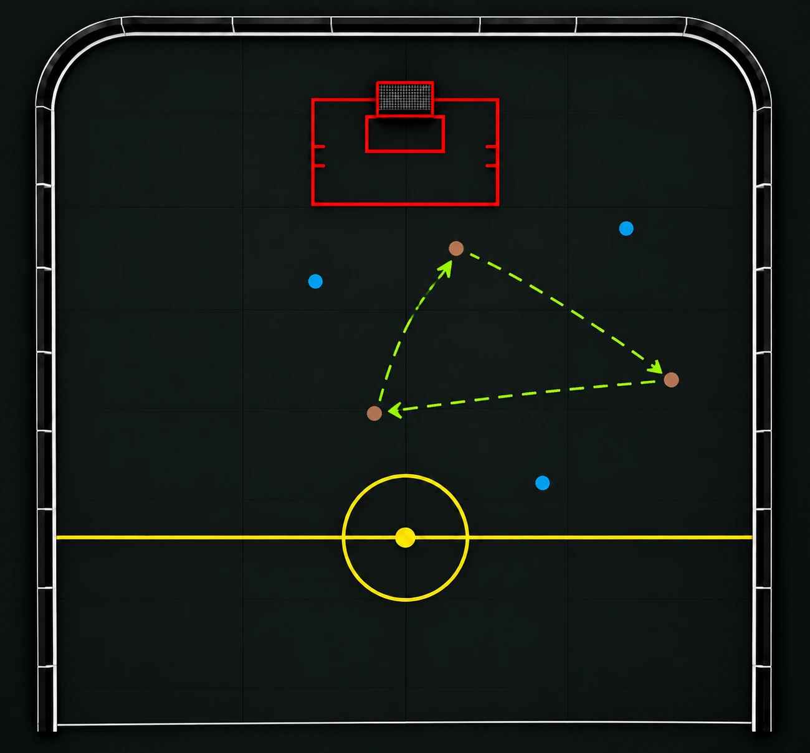

PassningarFem passningar
En passningsövning där två lag spelar 3 mot 3 och försöker hålla bollen inom laget. Klarar laget fem passningar utan att motståndarna bryter får det poäng eller möjlighet att avsluta på mål.
Syfte
Träna passningar, mottagningar, spelbarhet, rörelse utan boll, kommunikation och förmågan att behålla bollinnehavet under press.
Organisation
Dela in spelarna i två lag. Markera en spelplan på ungefär halva planen. Lagen spelar 3 mot 3 och försöker behålla bollen inom laget.
En målvakt behövs om ni använder varianten med avslut på mål.
Genomförande
- Tränaren startar spelet med att slänga in en slumpmässig boll.
- Laget försöker genomföra fem passningar inom laget utan att motståndarna bryter spelet.
- Klarar laget fem passningar, får laget ett poäng. In med tre nya spelare från vardera lag och tränaren startar sedan om spelet.
- Om motståndarna bryter en passning eller tar över bollen går turen över till dem. De försöker då själva nå fem passningar.
Utveckling – fem passningar och avslut
Ta bort poängräkningen och låt i stället laget få avsluta på mål när det lyckats med fem passningar i följd. Efter avslutet startar tränaren om spelet.
Tränartips
Uppmuntra spelarna att sprida ut sig, göra sig spelbara och röra sig efter passningen. Påminn dem om att titta upp innan de passar och att prata med varandra. Börja gärna med tre passningar om fem känns för svårt och öka sedan utmaningen.